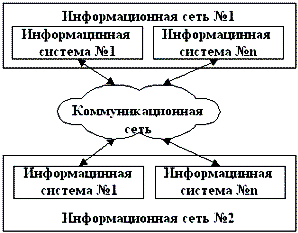
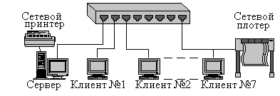
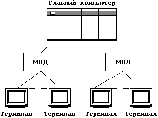
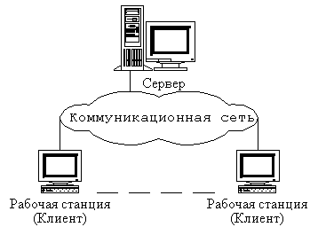
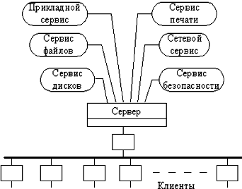

Рис. 1.4 Одноранговая архитектура
Сеть – это совокупность объектов, образуемых устройствами передачи и обработки данных. Международная организация по стандартизации определила вычислительную сеть как последовательную бит-ориентированную передачу информации между связанными друг с другом независимыми устройствами.
Сети обычно находится в частном ведении пользователя и занимают некоторую территорию и по территориальному признаку разделяются на:
Локальные вычислительные сети (ЛВС) или Local Area Network (LAN), расположенные в одном или нескольких близко расположенных зданиях. ЛВС обычно размещаются в рамках какой-либо организации (корпорации, учреждения), поэтому их называют корпоративными.
Распределенные компьютерные сети, глобальные или Wide Area Network (WAN), расположенные в разных зданиях, городах и странах, которые бывают территориальными, смешанными и глобальными. В зависимости от этого глобальные сети бывают четырех основных видов: городские, региональные, национальные и транснациональные. В качестве примеров распределенных сетей очень большого масштаба можно назвать: Internet, EUNET, Relcom, FIDO.
Различают два понятия сети: коммуникационная сеть и информационная сеть (рис. 1.1).
Коммуникационная сеть предназначена для передачи данных, также она выполняет задачи, связанные с преобразованием данных. Коммуникационные сети различаются по типу используемых физических средств соединения.
Информационная сеть предназначена для хранения информации и состоит из информационных систем. На базе коммуникационной сети может быть построена группа информационных сетей:
Под информационной системой следует понимать систему, которая является поставщиком или потребителем информации.
|  |
|
Рис. 1.1 Информационные и коммуникационные сети |
Компьютерная сеть состоит из информационных систем и каналов связи.
Под информационной системой следует понимать объект, способный осуществлять хранение, обработку или передачу информация. В состав информационной системы входят: компьютеры, программы, пользователи и другие составляющие, предназначенные для процесса обработки и передачи данных. В дальнейшем информационная система, предназначенная для решения задач пользователя, будет называться – рабочая станция (client). Рабочая станция в сети отличается от обычного персонального компьютера (ПК) наличием сетевой карты (сетевого адаптера), канала для передачи данных и сетевого программного обеспечения.
Под каналом связи следует понимать путь или средство, по которому передаются сигналы. Средство передачи сигналов называют абонентским, или физическим, каналом.
Каналы связи (data link) создаются по линиям связи при помощи сетевого оборудования и физических средств связи. Физические средства связи построены на основе витых пар, коаксиальных кабелей, оптических каналов или эфира. Между взаимодействующими информационными системами через физические каналы коммуникационной сети и узлы коммутации устанавливаются логические каналы.
Логический канал – это путь для передачи данных от одной системы к другой. Логический канал прокладывается по маршруту в одном или нескольких физических каналах. Логический канал можно охарактеризовать, как маршрут, проложенный через физические каналы и узлы коммутации.
Информация в сети передается блоками данных по процедурам обмена между объектами. Эти процедуры называют протоколами передачи данных.
Протокол – это совокупность правил, устанавливающих формат и процедуры обмена информацией между двумя или несколькими устройствами.
Загрузка сети характеризуется параметром, называемым трафиком. Трафик (traffic) - это поток сообщений в сети передачи данных. Под ним понимают количественное измерение в выбранных точках сети числа проходящих блоков данных и их длины, выраженное в битах в секунду.
Существенное влияние на характеристику сети оказывает метод доступа. Метод доступа – это способ определения того, какая из рабочих станций сможет следующей использовать канал связи и как управлять доступом к каналу связи (кабелю).
В сети все рабочие станции физически соединены между собою каналами связи по определенной структуре, называемой топологией. Топология – это описание физических соединений в сети, указывающее какие рабочие станции могут связываться между собой. Тип топологии определяет производительность, работоспособность и надежность эксплуатации рабочих станций, а также время обращения к файловому серверу. В зависимости от топологии сети используется тот или иной метод доступа.
Состав основных элементов в сети зависит от ее архитектуры. Архитектура – это концепция, определяющая взаимосвязь, структуру и функции взаимодействия рабочих станций в сети. Она предусматривает логическую, функциональную и физическую организацию технических и программных средств сети. Архитектура определяет принципы построения и функционирования аппаратного и программного обеспечения элементов сети.
В основном выделяют три вида архитектур: архитектура терминал-главный компьютер, архитектура клиент-сервер и одноранговая архитектура.
Современные сети можно классифицировать по различным признакам: по удаленности компьютеров, топологии, назначению, перечню предоставляемых услуг, принципам управления (централизованные и децентрализованные), методам коммутации, методам доступа, видам среды передачи, скоростям передачи данных и т. д. Все эти понятия будут рассмотрены более подробно при дальнейшем изучении курса.
Компьютерные сети представляют собой вариант сотрудничества людей и компьютеров, обеспечивающего ускорение доставки и обработки информации. Объединять компьютеры в сети начали более 30 лет назад. Когда возможности компьютеров выросли и ПК стали доступны каждому, развитие сетей значительно ускорилось.
Соединенные в сеть компьютеры обмениваются информацией и совместно используют периферийное оборудование и устройства хранения информации рис. 1.2.
С помощью сетей можно разделять ресурсы и информацию. Ниже перечислены основные задачи, которые решаются с помощью рабочей станции в сети, и которые трудно решить с помощью отдельного компьютера:
Компьютерная сеть позволит совместно использовать периферийные устройства, включая:
|  |
| Рис. 1.2 Использование периферийного оборудования |
Компьютерная сеть позволяет работать с многопользовательскими программами, обеспечивающими одновременный доступ всех пользователей к общим базам данных с блокировкой файлов и записей, обеспечивающей целостность данных. Любые программы, разработанные для стандартных ЛВС, можно использовать в других сетях.
Совместное использование ресурсов обеспечит существенную экономию средств и времени. Например, можно коллективно использовать один лазерный принтер вместо покупки принтера каждому сотруднику или беготни с дискетами к единственному принтеру при отсутствии сети.
Организация электронной почты. Можно использовать ЛВС как почтовую службу и рассылать служебные записки, доклады и сообщения другим пользователям.
Архитектура сети определяет основные элементы сети, характеризует ее общую логическую организацию, техническое обеспечение, программное обеспечение, описывает методы кодирования. Архитектура также определяет принципы функционирования и интерфейс пользователя.
В данном курсе будет рассмотрено три вида архитектур:Архитектура терминал-главный компьютер (terminal–host computer architecture) – это концепция информационной сети, в которой вся обработка данных осуществляется одним или группой главных компьютеров.
|  |
| Рис. 1.3 Архитектура терминал – главный компьютер |
Рассматриваемая архитектура предполагает два типа оборудования:
Главный компьютер, где осуществляется управление сетью, хранение и обработка данных.
Терминалы, предназначенные для передачи главному компьютеру команд на организацию сеансов и выполнения заданий, ввода данных для выполнения заданий и получения результатов.
Главный компьютер через мультиплексоры передачи данных (МПД) взаимодействуют с терминалами, как представлено на рис. 1.3.
Классический пример архитектуры сети с главными компьютерами – системная сетевая архитектура (System Network Architecture – SNA).
Одноранговая архитектура (peer-to-peer architecture) – это концепция информационной сети, в которой ее ресурсы рассредоточены по всем системам. Данная архитектура характеризуется тем, что в ней все системы равноправны.
|
|
Рис. 1.4 Одноранговая архитектура |
К одноранговым сетям относятся малые сети, где любая рабочая станция может выполнять одновременно функции файлового сервера и рабочей станции. В одноранговых ЛВС дисковое пространство и файлы на любом компьютере могут быть общими. Чтобы ресурс стал общим, его необходимо отдать в общее пользование, используя службы удаленного доступа сетевых одноранговых операционных систем. В зависимости от того, как будет установлена защита данных, другие пользователи смогут пользоваться файлами сразу же после их создания. Одноранговые ЛВС достаточно хороши только для небольших рабочих групп.
Одноранговые ЛВС являются наиболее легким и дешевым типом сетей для установки. Они на компьютере требуют, кроме сетевой карты и сетевого носителя, только операционной системы Windows 95 или Windows for Workgroups. При соединении компьютеров, пользователи могут предоставлять ресурсы и информацию в совместное пользование.
Одноранговые сети имеют следующие преимущества:Проблемой одноранговой архитектуры является ситуация, когда компьютеры отключаются от сети. В этих случаях из сети исчезают виды сервиса, которые они предоставляли. Сетевую безопасность одновременно можно применить только к одному ресурсу, и пользователь должен помнить столько паролей, сколько сетевых ресурсов. При получении доступа к разделяемому ресурсу ощущается падение производительности компьютера. Существенным недостатком одноранговых сетей является отсутствие централизованного администрирования.
Использование одноранговой архитектуры не исключает применения в той же сети также архитектуры «терминал-главный компьютер» или архитектуры «клиент-сервер».
|  |
|
Рис. 1.5 Архитектура клиент – сервер |
Архитектура клиент-сервер (client server architecture) – это концепция информационной сети, в которой основная часть ее ресурсов сосредоточена в серверах, обслуживающих своих клиентов (рис. 1.5). Рассматриваемая архитектура определяет два типа компонентов: серверы и клиенты.
Сервер - это объект, предоставляющий сервис другим объектам сети по их запросам. Сервис – это процесс обслуживания клиентов.
Сервер работает по заданиям клиентов и управляет выполнением их заданий. После выполнения каждого задания сервер посылает полученные результаты клиенту, пославшему это задание.
Сервисная функция в архитектуре клиент-сервер описывается комплексом прикладных программ, в соответствии с которым выполняются разнообразные прикладные процессы.
|  |
|
Рис. 1.6 Модель клиент-сервер |
Процесс, который вызывает сервисную функцию с помощью определенных операций, называется клиентом. Им может быть программа или пользователь. На рис. 1.6 приведен перечень сервисов в архитектуре клиент-сервер.
Клиенты – это рабочие станции, которые используют ресурсы сервера и предоставляют удобные интерфейсы пользователя. Интерфейсы пользователя это процедуры взаимодействия пользователя с системой или сетью.
Клиент является инициатором и использует электронную почту или другие сервисы сервера. В этом процессе клиент запрашивает вид обслуживания, устанавливает сеанс, получает нужные ему результаты и сообщает об окончании работы.
В сетях с выделенным файловым сервером на выделенном автономном ПК устанавливается серверная сетевая операционная система. Этот ПК становится сервером. Программное обеспечение (ПО), установленное на рабочей станции, позволяет ей обмениваться данными с сервером. Наиболее распространенные сетевые операционная системы:
NetWare фирмы Novel;
Windows NT фирмы Microsoft;
UNIX фирмы AT&T;
Linux.
Помимо сетевой операционной системы необходимы сетевые прикладные программы, реализующие преимущества, предоставляемые сетью.
Сети на базе серверов имеют лучшие характеристики и повышенную надежность. Сервер владеет главными ресурсами сети, к которым обращаются остальные рабочие станции.
В современной клиент-серверной архитектуре выделяется четыре группы объектов: клиенты, серверы, данные и сетевые службы. Клиенты располагаются в системах на рабочих местах пользователей. Данные в основном хранятся в серверах. Сетевые службы являются совместно используемыми серверами и данными. Кроме того службы управляют процедурами обработки данных.
Сети клиент-серверной архитектуры имеют следующие преимущества:
позволяют организовывать сети с большим количеством рабочих станций;
обеспечивают централизованное управление учетными записями пользователей, безопасностью и доступом, что упрощает сетевое администрирование;
эффективный доступ к сетевым ресурсам;
пользователю нужен один пароль для входа в сеть и для получения доступа ко всем ресурсам, на которые распространяются права пользователя.
неисправность сервера может сделать сеть неработоспособной, как минимум потерю сетевых ресурсов;
требуют квалифицированного персонала для администрирования;
имеют более высокую стоимость сетей и сетевого оборудования.
Выбор архитектуры сети зависит от назначения сети, количества рабочих станций и от выполняемых на ней действий.
Следует выбрать одноранговую сеть, если:количество пользователей не превышает десяти;
все машины находятся близко друг от друга;
имеют место небольшие финансовые возможности;
нет необходимости в специализированном сервере, таком как сервер БД, факс-сервер или какой-либо другой;
нет возможности или необходимости в централизованном администрировании.
количество пользователей превышает десяти;
требуется централизованное управление, безопасность, управление ресурсами или резервное копирование;
необходим специализированный сервер;
нужен доступ к глобальной сети;
требуется разделять ресурсы на уровне пользователей.
Дать определение сети.
Чем отличается коммуникационная сеть от информационной сети?
Как разделяются сети по территориальному признаку?
Что такое информационная система?
Что такое каналы связи?
Дать определение физического канала связи.
Дать определение логического канала связи.
Как называется совокупность правил обмена информацией между двумя или несколькими устройствами?
Как называется объект, способный осуществлять хранение, обработку или передачу данных, в состав, которого входят компьютер, программное обеспечение, пользователи и др. составляющие, предназначенные для процесса обработки и передачи данных?
Каким параметром характеризуется загрузка сети?
Что такое метод доступа?
Что такое совокупность правил, устанавливающих процедуры и формат обмена информацией?
Чем отличается рабочая станция в сети от обычного персонального компьютера?
Какие элементы входят в состав сети?
Как называется описание физических соединений в сети?
Что такое архитектура сети?
Как назвать способ определения, какая из рабочих станций сможет следующей использовать канал связи?
Перечислить преимущества использования сетей.
Чем отличается одноранговая архитектура от клиент-серверной архитектуры?
Каковы преимущества крупномасштабной сети с выделенным сервером?
Какие сервисы предоставляет клиент-серверная архитектура?
Преимущества и недостатки архитектуры терминал–главный компьютер.
В каком случае используется одноранговая архитектура?
Что характерно для сетей с выделенным сервером?
Как называются рабочие станции, которые используют ресурсы сервера?
Что такое сервер?